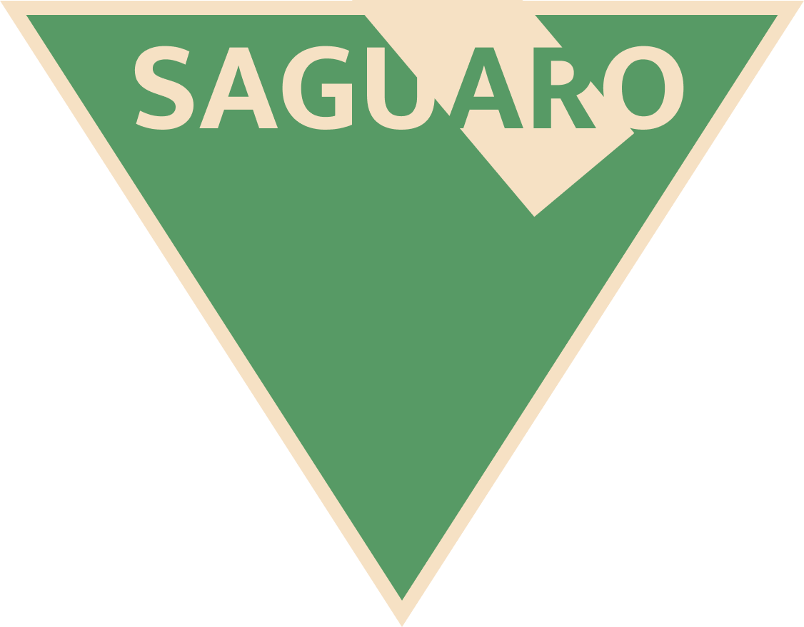

Saguaro is a software oriented startup I created with some friends based on principles of social impact and thoughtful design. Since inception in Februaru 2020, we have joined The Garage at Northwestern and have begun the ideation stage.
The current emphasis of Saguaro's efforts is on developing community based socialization platforms that help combat the feeling of isolation that millenials face. We believe this is an especially relevant focus with the coming rise in automation and introduction of work from home technologies.
HackNU is Northwestern's only hackathon that engages with the entire student body. Co-founded by me and one other CS major, HackNU is currently reaching out to coroporations for potential sponsorship and judging with the expected launch in Fall 2020.
Looking around at peer institutions, I noticed that there were limited opportunities for Northwestern engineering students to get involved with the problem-solving mindset and expand their learning beyond the classroom.
Paxelisk was a social media brand I created at the end of middle school. It started out as a single account on a niche platform called iFunny that spread to other services like Instagram, Twitter, and Tumblr. After reaching a combined 300K followers, I started to pursue monetization strategies in the form of click-based sponsorships with clothing companies.
Outside of the social media brand, I took lessons at a local makerspace to learn how to create wooden accessories that would capitalize on relevant internet trends. For example, selling little frog men that resembled Kermit.